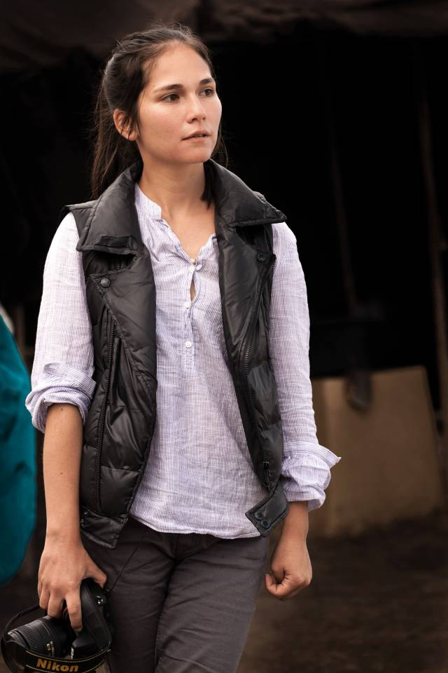
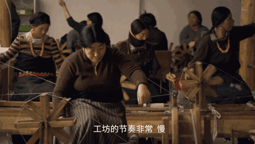
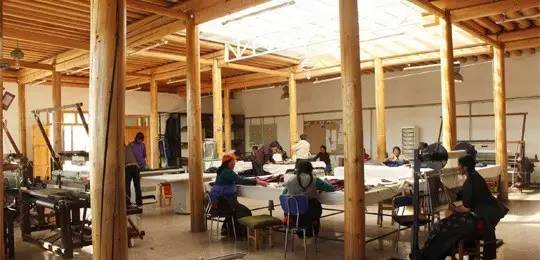
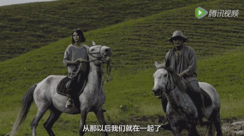
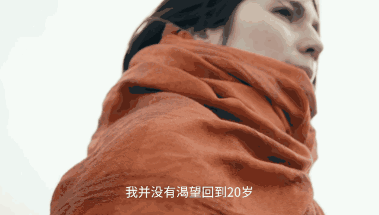

NUT759
Hello! My name is wei bomb

22岁美籍混血儿用耗牛征服时尚界
12年前，大学毕业的Party上，一个自以为参透了人生的同学，这样对德清说。22岁的德清一下子被搞郁闷了：我才不要！我人生中最好的时光还没到来呢！这个女孩，就是德清•雅诗。父亲是藏族人，母亲是美国和希腊混血，从小在纽约长大，德清天生有一颗冒险的心。
2004年，大学毕业后，22岁的德清，独自一人从纽约跑到青藏高原，到海拔3200米的藏区寻根。之后的13年，德清的人生不断解锁新的奇迹：她嫁给当地的藏民，生下两个可爱的混血女儿；把高原的牦牛绒织成围巾，一举登上巴黎最顶级的秀场；用毡房开了家草原民宿，被评为全球最美的43家酒店之一！世界屋脊上的甘南藏区这片不为人知的秘境，也第一次向世人展示了它的美丽和文化~说起来，德清和中国甘南结缘，很大一部分要归功于这位不一般的母亲。她是一位人类学家、宗教学家、设计师和摄影师，嫁给了德清的父亲——一位藏族作家为妻。和大多数希望女儿拥有安稳工作的母亲不同，德清母亲的人生哲学是：人活着最重要的是，找到有意思的事情来做。她教育孩子：你们要试图有所作为，而不是按部就班为了赚钱而生计。德清的母亲精通纺织，而且钟爱藏族文化，她对织品有长达几十年的兴趣。德清学的是电影学和东亚社会研究双学位。

毕业后，母亲鼓励她去青藏高原寻根，有可能的话，帮她寻找一种直径20微米左右的牦牛绒，看看能不能做出点什么……带着一部相机，德清来到了甘肃甘南一个叫仁多玛的村落。这里天空高远，静谧辽阔。春天一到，油菜花田开满山坡，简直是又一款Windows经典桌面的存在！令德清震撼的，除了这里的美丽，还有它的贫穷。2004年的仁多玛，没有网络，路况糟糕。虽然通了电，但插座并没有普及，村民们依然保存着原始的游牧生活方式。和所有贫穷的地方一样，年轻人不愿一生都在苦寒的高原放牧，于是开始离开草原去往城市。留下来的大多是妇孺和老人，牦牛和羊群是他们唯一的收入来源，但牛羊时刻面临着狼群、雪灾、传染病的危险。最重要的是，一旦年轻人开始外流，就意味着传统文化和技艺的逐步消亡……德清找到了母亲说的那种牦牛绒，那是牦牛身上用来御寒的一层绒毛，长在头颈附近，也是牦牛全身最纤细的绒毛。直径不到20微米，长度只有3.4~4.5厘米，名字叫做Khullu（库）。库的产量稀少、且采集麻烦，不能用剪刀剪，只能在春天自然脱落的时候用手一点点去扒。2岁大小牦牛的“库”是最好的，每头小牛每年只能产出100g左右的库。收集100g牦牛绒，清洗后的利用率只有25%，织一条披肩需要30头小牦牛的绒毛，但是织出的成品不仅柔软、保暖、耐用，还有着大地的色泽，暮色一般的橘、雨过天空的青，寺院墙壁一样的赭……德清忽然想到：这些珍贵的牦牛绒或许让牧民的生活好一些！她决定成立一个手工作坊，生产牦牛绒围巾、披肩、毛毯。德清把这个想法说给牧民听，大家全都不相信这个外来的人：失败了怎么办？你撂挑子跑回美国了怎么办？好不容易，德清说服了她的第一批员工——一对愿意冒险的年轻夫妇，桑吉和周毛吉桑吉和毛吉一共有3个孩子，每天早晨，毛吉三四点就要起床，捡拾牛粪，挤奶，做酥油或者奶酪什么的.......她说牧民妇女都是这样生活的。德清花了整整一年时间，把他们从不识字的牧民，培养成了会编织、会英文、会用电脑的员工。

如今桑吉已是生产部的经理，去过N多个国家，毛吉则成了生产部资历最长的“元老”，技艺最精湛的师傅，偶尔客串一下模特，也是惊艳到不行。有了第一个吃螃蟹的人，第二年又有了16个大胆的本地人加入。如今，德清的牦牛绒工坊已经有124人，其中116人是仁多玛的村民，她为工坊取名叫：诺乐，汉语的意思是：财神。进入诺乐工坊，你会发现时光变得无比古老静谧，穿着藏族服饰的女工们，坐在尼泊尔的木制纱轮后纺纱。和现代化流水线的快节奏不同，这里的一切都是慢悠悠的。培养一个成熟的工人，需要整整6个月时间，制作一条牦牛绒围巾，则需要经过繁琐精细的7道工序：纺线、两线合一、穿经线、纺织，检验、熨烫、修剪……人的手不是机器，要保持长期的一致性非常难。机器上垂直的线超过4000根，都是手工一根一根穿上去的！不能有任何一根发生错位，这，正是手工的危险和迷人~也正是这种慢，流水线不具备的高品质，和手工的情感体验，与奢侈品的诉求简直不能更契合！

诺乐成立第一年，德清就从欧洲带回600份订单！2008年开始，LV、Hermès、Lanvin，这些顶奢品牌陆续抛来橄榄枝，一条诺乐围巾能卖出500~2000欧元不等！2016年底，诺乐在拉萨也有了旗舰店！获得今天的成功，德清有许多坚持，坚持精选2岁小牦牛身上最纤细的绒毛，坚持对新员工6个月的专业培训，坚持一条围巾用整整30头牦牛的绒毛，坚持用最古老的方式手工制作布料，坚持用昂贵但环保的进口染料……德清趁着雪景外出拍摄，不仅如此，长久以来，德清都坚持自己拍摄产品，坚持用员工做模特。这位身高1米9的帅锅，是诺乐的超级男模万代，也是染色部的员工！凭着颇有藏族特色的英气脸庞，万代已在欧洲迷倒了千万欧洲迷妹，每次欧洲的客户来这里，都会嚷着要去染色部参观~醉翁之意不在酒，其实就是想去看万代啦！知道大家喜欢看帅哥，再来几张！有时候，德清的两个女儿，也会跑来客串下小模特~咦？从哪里突然冒出两个闺女来啦！没错，德清来到甘南的第二年，就邂逅了爱情！2005年，德清遇到了依旦杰布，依旦是一名藏裔设计师。曾经周游世界，因为对故乡的草原魂牵梦萦，又重新回到草原。两个人很快心意相通，走到一起，如今已经有了两个可爱的女儿，羡煞旁人的四口之家！

本来，故事讲到这里，差不多可以圆满地画上句号了，但是传奇还没有结束！2013年，德清和依旦杰布，在甘南海拔3100米的桑科草原，打造了一个草原民宿，诺尔丹营地。7个小木屋和4个帐篷，一年只开放5个月，没有自来水，没有抽水马桶，竟然登上世界著名旅游杂志《Travel+Leisure》，被誉为全球最美的43家酒店之一！中国仅有3家入选！桑科草原是牛羊的冬季牧场，夏天，牛羊都去海拔更高的草甸上放牧了，这里也迎来了一年中最舒服、最美丽的季节。德清和依旦就在这段时间，搭起可移动的地基，撑起木屋和帐篷。营地的许多家具都是从藏民家收来的，烟熏的旧柜子，有怀旧的烟火气息。一户藏民家捡羊粪的木板，洗净后被用来盛放干果，牧民们知道都惊呆了！室内的床品和装饰品，都是诺乐工坊的手工牦牛绒制品。一条围巾就上千欧元，一整套室内用品？天呐抠门的小编表示不敢想象！地毯、靠枕、盖毯，绣有牦牛、马、鹤，全部独此一件！酒店的主厨精通营养学，能根据草原的健康食材，定制藏地特色的有机食品和西式料理。诺尔丹提供三道主要的菜：牦牛、青稞和人参果。还贴心地准备了红景天茶，帮助客人适应高原环境。房间里没有引进自来水，也没有抽水马桶，不提供一次性洗漱用品，生活用水被盛放在一口大缸子里。传统的旱厕，用盖土把排泄物变成有机肥料。这么做是为了保护草场，草场的生态循环一旦被破坏，需要好几年才能恢复。看到右下角的水桶没？想看原汁原味的藏族歌舞？想买货真价实的藏银藏器？对不起，这里都没有哦~没有任何商业的气息，只有广袤的草原，高远的天空，运气好的话还能遇见彩虹。夜晚没有明亮的路灯和霓虹，只有繁星闪烁的银河。如今，德清和女儿们，早已彻底把这里当做了自己的家，女儿们说着地道的当地方言，没有一丁点口音，仁多玛的村民也完全接受了他们。
回想起青春年代，德清没有任何遗憾，她说： 我不想回到20岁，那时的我没有自信、惶恐不安，不清楚自己在做什么，经验也无从谈起。但是现在，每一天都能感到自己比昨天更成熟，这是一种很奇妙的感觉……2017年，德清35岁，在外界看来她俨然已是一个传奇，但她，已不再需要，通过外界的评价来获取自己的价值。说不定，哪一天她又要开始新的冒险呢！

如果想看她的小黄片就点这个链接